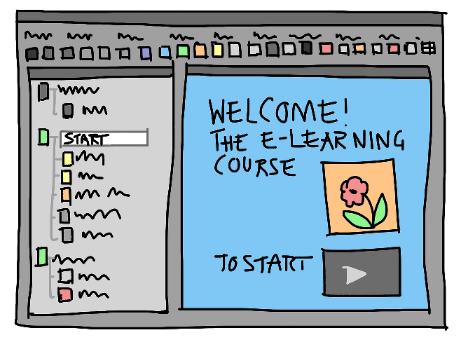

La interfas de usuario
Una interfaz de usuario para pagina web hace referencia al entorno con el cual entra en contacto el ususario al hacer uso de una pagina web, como por ejemplo:
- Botones
- Menus
- Enlaces
- Graficos
Estos elementos son los directamente responsables de la navegacion, permiten al usuario manipular a voluntad de una forma intuitiva su paso por dicha pagina.
Inicialmente el proposito de una interfas de usuario era poder manejar facilmente la pagina, en la actualidad la parte visual y estetica toman un papel muy importante para una buena experiencia del usuario.
Tipos de interfas de usuario
Command Line Interfaces (CLI)
Usa tan solo una línea de comandos y un prompt para mostrar la posición actual o un mensaje cubrieron la oscura pantalla, por ejemplo en el caso de los primeros ordenadores MS-DOS. Con una interfaz de líneas de comandos o Command Line Interface, en la cual se tecleaban unos comandos específicos, era posible establecer la comunicación con el ordenador. Tras el procesamiento de la petición, el ordenador mostraba el resultado en formato de texto.
Text User Interface (TUI)
La diferencia con las CLI consiste en que la interfaz utiliza la pantalla como una superficie plana y no orientada a las líneas. Sin embargo, la interfaz sigue ejecutándose, tal y como revela su nombre, en modo texto. Los programadores pueden recurrir normalmente a 256 caracteres y hoy en día, las TUI se utilizan, por ejemplo, en gestores de arranque o en programas BIOS Setup.
Graphical User Interfaces (GUI)
Las interfaces gráficas de usuario son, en la actualidad, el estándar más establecido. Este software se aplica con elementos gráficos de control e imágenes simbólicas que toman como referencia de forma creativa a objetos del “mundo real”. En este sentido, los usuarios suelen recurrir al ratón y al teclado como dispositivos de control, pero cada vez es más común que entren en juego pantallas táctiles que funcionan mediante toques. A través de lo que se conoce como interfaz gráfica de usuario, los iconos también se introducen en el mundo digital, al igual que el escritorio, las ventanas o la papelera. Con el ratón, que sirve para desplazarse por la pantalla, se pueden seleccionar los elementos deseados y abrir con un ligero clic.
Voice User Interface (VUI)
la Voice User Interface permite la interaccióncon los ordenadores por medio del control por voz. Cada sistema operativo actual ofrece este tipo de UI de una forma o de otra: Apple ha creado Siri, Amazon introdujo a Alexa, Microsoft incluye a Cortana en las versiones actuales de Windows y la búsqueda de Google también puede llevarse a cabo mediante voz siempre y cuando se cuente con el hardware correspondiente. De esta manera, puesto que se puede acceder a las aplicaciones por medio de llamadas o lo que se transmite a viva voz también se escribe de manera automática, los usuarios pueden trabajar de un modo más efectivo. Otra de las ventajas es que el control por voz garantiza una mayor accesibilidad.
Natural User Interface (NUI)
La comunicación con el ordenador se establece de un modo especialmente intuitivo a través de una Natural User Interface, que puede ser contemplada como una evolución de la interfaz gráfica de usuario y de la Voice User Interface. En este sentido, la interfaz de usuario interactiva reacciona tanto a los gestos como a los movimientos y al lenguaje. Asimismo, también es capaz de reconocer rostros y objetos. Los diferentes sensores, cámaras y micrófonos permiten una comunicación versátil con el ordenador. Muchos de los smartphones y tablets actuales apuestan por tecnologías NUI, al igual que ocurre con las consolas Wii de Nintendo, que utilizan el reconocimiento de gestos, rostros e idiomas de un modo lúdico.
Referencia: Pagina web Digital Guide Ionos